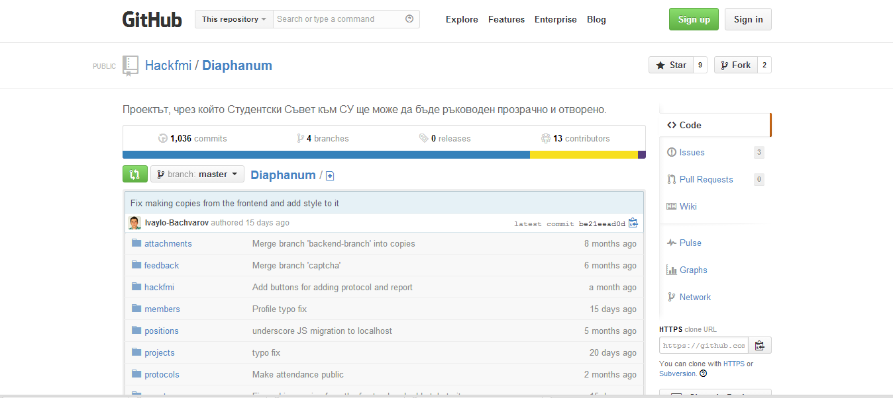
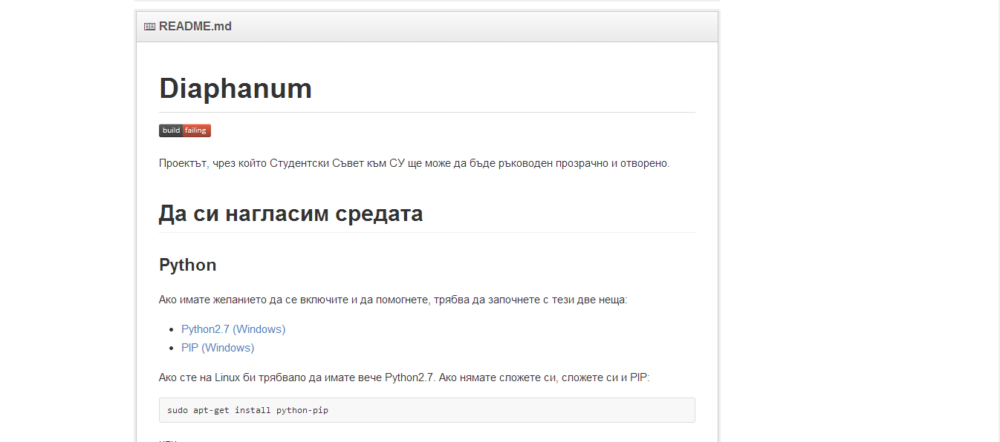
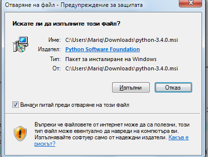
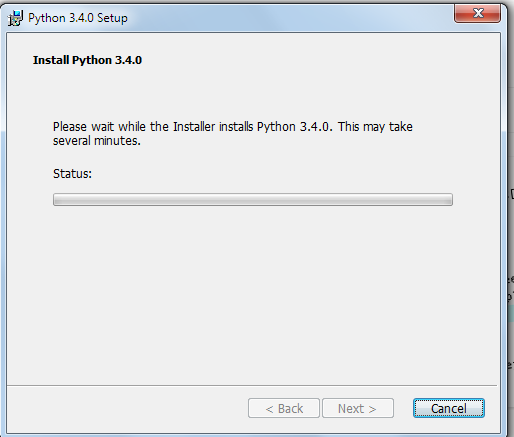
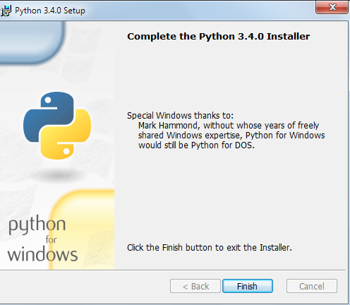
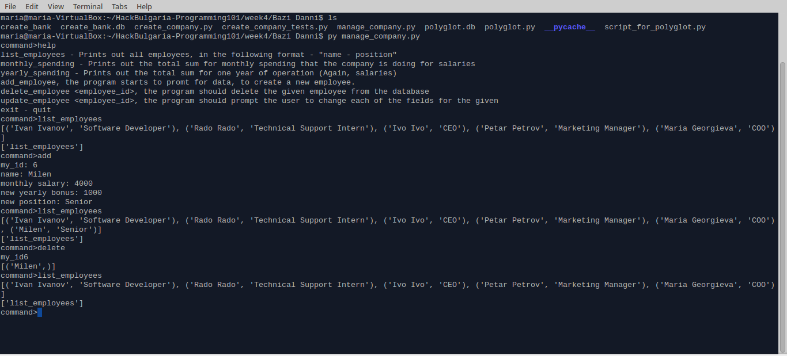
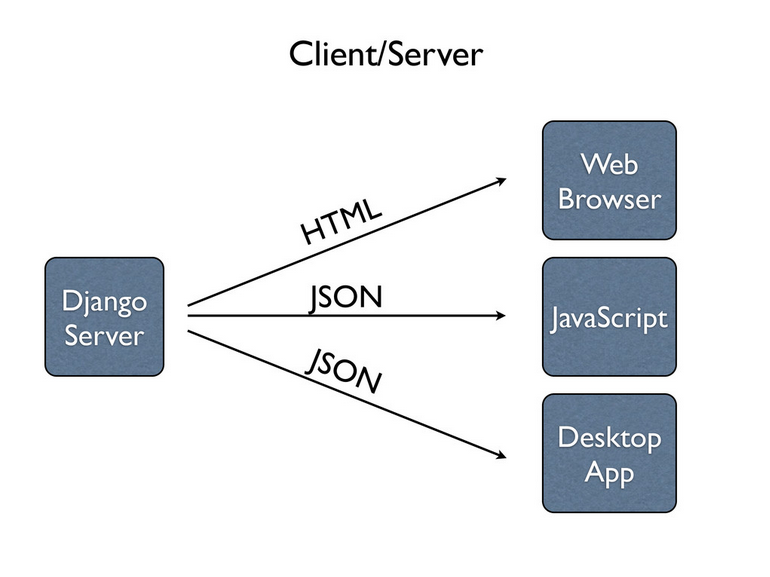

Какво е Уеб приложение
a) Уеб WWW – world wide web – това е световната интернет мрежа, чрез която всички ние комуникираме. Начинът, по който е изграден интернета е уеб страници, които са свързани чрез хиперлинкове. В уеб страниците може да има текст, картинки или друго. Формата на уеб страниците обикновенно е HTML, в които могат да се слагат хиперлнковете, които са връзката към други страници със друго сдържание. Това е на кратко за уеб.
b) Приложение Приложение е когато няколко уеб страници са свързани помежду си и използват една и съща логика, като тази логика изпълнява дадена функционалност. Има много видове приложения с различни цели – например едно приложение е e-mail приложение е система, която се състои от user interface – изглед ( страница), чрез която се влиза с дадено име и парола; Другото, което има в това приложение е логика – тя се състои от много модули – модул за изпращане, за получаване, за проверка дали е изтрито, прочетоно и т.н. Това е една много голяма система, което е приложение.Дори е Уеб приложение – и нещото, което го прави Уеб е това, че информацията преминава през световната мрежа – www.
Това са снимки на примерно уеб приложение на Python, което е качено в сорс контрол системата.
 
Какво е Python
Python е език за програмиране, който може да се използва както за конзолни приложения, така и уеб приложения.Може да се използва за всякакви цели. Той е език от високо ниво. Също така той е интерпретаторен език, което означава, че интерпретатора минава през всеки ред и го изпълнява. Това забавя изпълнението на програми на Python, но за сметка на това той е много лесен за писане и в много от случаите при уеб приложенията не се търси много добра производителност. Там се търси повече динамичност, гъвкавост и променливост. Python е препоръчван дори за деца на 13 години, което говори достатъчно, че той е достатъчно лек, приятен и лесен език за програмиране.
При компилаторните езици нещата стоя по малко по-различен начин. Компилаторът прилага върху кода много бързи алгоритми и изпълнява целия код много бързо, което повишава производителността. Но компилаторните езици носят със себе си среди за разработка (IDE-s), много библиотеки, големи сървъри, за да тръгнат някакви уеб приложения на тях и това кара уеб програмистите да търсят по гъвкави технологии като Python и JavaScript.
Python притежава голям набор от вградени библиотеки. Има няколко причини, поради които Python е изключително разбираем и лесен за работа: - динамични типове данни - не е необходима декларацията на променливи - вместо „къдрави“ скоби, ; и т.н., за структуриране на кода се използва индентация
Как да си инсталираме Python
За да си инсталираме Python , трябва първо да го интеглим. Това може да се случи тук. От тук нататък можем да изберем две операционни системи. Като цяло Python е отворен език и се използва много под Unix – базираните операционни системи. Но понякога се налага да се използва и в Windows. Това е причината пораки която ще покажа и двете инсталации.
a) Под Windows (screenshots) На мен лично все още не ми се е налагало да го ползвам и предполагам, че много малко са случаите, в които се налага. След като се изтегли и инсталира Python, при стартиране на python.exe, се отваря интерактивната конзола, която е итерактивна конзола.
  
b) Под Linux В по-новите Unix системи има инсталиран Python 2.7, тъй като голяма част от самата операционна система е съставена от него и ако бъде изтрит е много вероятно да се срине и Linux-a. Нужно е да си инсталираме Python ако искаме по-новата му версия – 3.4. Инсталирането на Python се прави със следните команди написани на конзолата.
Сега вече трябва да имате инсталирана по-нова версия на Python.
Когато е инсталиран Python, можем да напишем python в конзолата и ще се появи интерактивния интерпетатор – чрез него може да пробваме различни неща – малки парчета код, за които не сме сигурни какво правят или да тестваме какво точно се случва с dictionary и дали е mutable. Може да се ползва и като калкулатор.
Изпълняване на *.py
Файловете *.py са неизпълними, тъй като не са *.exe и могат да бъдат изпълнявани ако се напише следната команда в cmd:
* = името на файла
тази команда означава, че Python се опитва да интерпретира този файл.
Какво е PIP & virtualenv
PIP е специален tool за инсталиране на различни пакети на Python.
Virtualenv е tool, който прави локална версия на Python във дадена папка. Това приложение е много полезно, тъй като ако имаме много проекти, които използват различни версии на Python и различни версии на библиотеките му, може да станат много големи проблеми. Чрез virtualenv (env) можем да имаме за всеки отделен проект специален Python подходяща версия с подходящи библиотеки. Затова и ще покажа как се инсталира и колко е важно да го имаме във всеки проект.
a) Инсталиране на PIP
b) Инсталиране на virtualenv
c) Създаване на локална env и активиране
d) Инсталиране на дадени пакети
Конзолни приложения с Python
Още от училище знаем, че първо трябва да се запознаем с конзолата и вече във втори курс наистина осъзнавам, че е така и не може да скочим направо в дълбоката вода без да сме се научили да плуваме поне малко.
Така стана и с мен, преди да започна да пиша уеб все още се уча да пиша конзолни приложения. В повечето случаи те са същите като уеб приложенията, но без красив интерфейс, който да се чупи на IE и да се чудим как да го оправяме. Затова е по-добре да се усъвършенстваме в конзолата и след това лесно да преминем на уеб.
Това е дадено конзолно прилоцение, което има конзолен интерфейс.

Какво е нужно, за да направим уеб приложение
Едно уеб приложение има ннужда както от frond-end, така и от back-end част.
a. Frond-end – това е визуалната част на приложението. Тя може да бъде направена със следните технологии:
Това е визуалната част на приложението. Тя може да бъде направена със следните технологии:
- HTML
- CSS
- JavaScript
b. Back-end
Тази част представлява логиката на приложението. Тя представлява същтността на приложението. Може да се състои от две части или само от първата.
i. Логика на JavaScript - по-лесно приложение
Може да се напише и приложение, което няма сървър.
ii. Логиката да е написана на Python,C#, C++, Java и да комуникира със сървър.
В този случай трябва да бъде направена връзката между сървъра и логиката. Това е едно от най-важните неща, които трябва да се напишат при уеб приложенията.
c. Сървър
Един от най-лесните начини да си осигурим сървъра както и всички благинки за писане на уеб приложения е да използваме framework-а Django, който е себе си има освен малък сървър, и много структуриран код – като е разделен във вида на MVC модела, което до голяма степен улеснява коденето на дадено приложение и прави кода по-разбираем и гъвкав. Много от сървърите на писани на C/C++ и те не могат директно да изпълнят кода на Python, затова се правят „мостове”, които се наричат интерфейси.
d. Интерфейси
Интерфейсите са различни и не всеки уеб сървър поддържа всеки интерфейс, затова не е толкова лесно да се направи подходящ интерфейс.
Common Gateway Interface (CGI) е най-старият интерфейс. Той не емного бърз, защото трябва да се стартира при всяка заявка, която пък пуска Python интерпретатора и това води до забаване на отговора на заявката.
Уеб приложения с Python
Python използва най-много два сървъра Apache и . Винаги, когато имаме някакво уеб приложение трябва да ги използваме. Нещото, което трябва ние като програмисти да направим е връзката между сървъра и логиката на приложението ни. Най-популярният framework за Python – Django има в себе си малък сървър, на който тръгват самите приложения и това спомага много на програмистите и затова го прави много използван от уеб програмистите на Python.
a) Django
Django е framework ( колекция от библиотеки) за уеб програмиране в Python. Django може да бъде изтеглен от тук. Django ни кара да пишем по структуриран код, тъй като ни кара да слагаме всичко в различни модули, което е много хубаво за code review. Ако искаме да се запознаем с документацията на Django може да го направим тук.

- Първа стъпка – подкарване на development сервър-а.
- Втора стъпка – да се настои базата данни – за препоръчване е MySQL или sqlite. Може Django да създаде база данни за нас и да не се променя.
b) Jython
Jython е специален език дистрибуцив на Python, който е подходящ за използване на Python на Java платформа. Уникалното на Jython е това, че може да бъде run-нато на Java Virtual Machine – JVM. Това прави Jython един от първите алтернативните езици за писане на JVM. Jython позволява да се използват много от популярните библиотеки и APIs на Python върху JVM. Също така и Django може да се използва на JVM.
Най-голямото предимство на Jython е, че може да има интеграция с Java. Всяка една библиотека, която е част от JVM може да се използва с Jython. Това означава, ч ехората, котио пишат на Jython имат както библиотеките на Java, така и на Python, което олеснява до голяма степенпрограмирането.
i. Променливи и Expressions
Променливите в Jython могат да бъдат различни типове, също така няма деклариране на променливите, направо се използват. По този начин типът на променливите може да бъде променян във всеки един момент.Това е пример, който може веднага да бъде изпробван във интерактивната конзола на Python

ii. Условия и итерации
iii. Функции и ламбди
1. Функции в Python
В Python има функции, няма процедури. Функциите трябва да връщат само един аргумент. Функция се дефинира по следния начин:
На аргументите във дефинирането на функция може да задаваме стойности по-подразбиране. При извикване на дадена функция можем да подаваме аргументите в какъвто си ред искаме.
Функциите са едни от най- мощтните инструменти на Jython. Всяка една функционалност може да бъде сложена във функция. Функциите в Jython и техните сигнатури са много близки до сигнатурите на функциите в Java. Също така може да се наслагват функции една в друга като едната е параметър на друга и т.н. Jython функциите могат да връщат един или повче аргументи.
iv. Класове
Синтаксът на класовете в Jython е много близък до този на Java, въпреки че те имат доста различия като концепция. Например при наследяването – Java пъддържа множествено наследяване – може да бъде наследяван повече от един клас. Докато класовете в Jython са динамични и могат да бъдат променяни runtime.
Какво дава Jython на Java и Python
a) Java
Тя е език, който не е толкова димамичен, компилира се, което го прави много бърз, но много бавно се променя самият език и няма гъвкавост.
b) Python
Той е много гъвкав, лесен за писане и научаване. При него проблемът е, че не се компилира, а се интерпретира, което го прави малко по-бавен.
c) Jython
Той съчетава във себе си бързината на Java и гъвкавостта и свободата на Python.
Ресурси
https://github.com/HackBulgaria/Programming101
https://pypi.python.org/pypi/pip
http://www.virtualenv.org/en/latest/virtualenv.html
https://www.python.org/download/
https://wiki.python.org/moin/WebFrameworks
https://docs.python.org/2/howto/webservers.html
https://www.djangoproject.com/download/
https://docs.djangoproject.com/en/1.6/
http://www.jython.org/downloads.html
http://www.oraclejavamagazine-digital.com/javamagazine_open/20130506#pg83
http://www.oraclejavamagazine-digital.com/javamagazine_open/20130304#pg67
http://fwierzbicki.blogspot.com/2012/01/jython-dev-notes-part-i-jython-exposer.html
http://academy.telerik.com/seminars/software-engineering/python-and-django-development
http://www.jython.org/jythonbook/en/1.0/